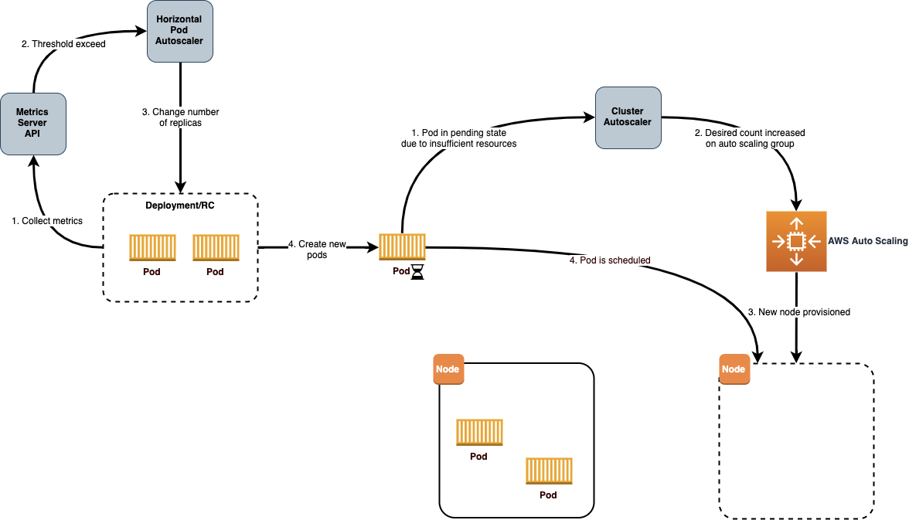
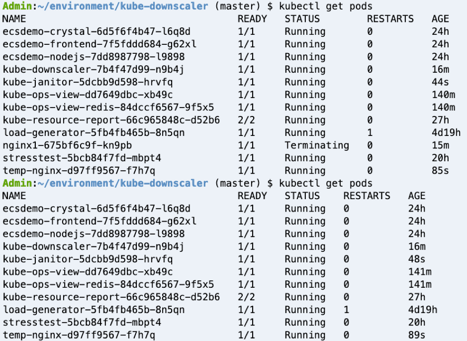

成本效益資源¶
成本效益資源意味著使用適當的服務、資源和配置來運行您的 Kubernetes 叢集上的工作負載,從而實現成本節省。
建議¶
確保用於部署容器化服務的基礎設施與應用程式配置和擴展需求相匹配¶
Amazon EKS 支持多種類型的 Kubernetes 自動縮放 - Cluster Autoscaler、Horizontal Pod Autoscaler 和 Vertical Pod Autoscaler。本節涵蓋其中兩個,Cluster Auto Scaler 和 Horizontal Pod Autoscaler。
使用 Cluster Autoscaler 調整 Kubernetes 叢集的大小以滿足當前需求¶
Kubernetes Cluster Autoscaler 會自動調整 EKS 叢集中的節點數量,當 pod 由於資源不足而無法啟動,或者叢集中的節點利用率低且其 pod 可以重新調度到叢集中的其他節點時。Cluster Autoscaler 會在任何指定的自動縮放組內擴展工作節點,並作為部署在您的 EKS 叢集中運行。
Amazon EKS 與 EC2 托管節點組自動化了 Amazon EKS Kubernetes 叢集的節點(Amazon EC2 實例)的配置和生命週期管理。所有托管節點都作為 Amazon EC2 自動縮放組的一部分進行配置,並由 Amazon EKS 為您管理。所有資源,包括 Amazon EC2 實例和自動縮放組,都在您的 AWS 帳戶中運行。Amazon EKS 為托管節點組資源打上標籤,以便 Kubernetes Cluster Autoscaler 進行發現。
https://docs.aws.amazon.com/eks/latest/userguide/cluster-autoscaler.html 上的文檔提供了有關設置托管節點組並部署 Kubernetes Cluster Auto Scaler 的詳細指導。如果您正在跨多個可用區運行有狀態應用程序,並使用 Amazon EBS 卷作為後端,並使用 Kubernetes Cluster Autoscaler,您應該配置多個節點組,每個節點組範圍限定在單個可用區。
基於 EC2 的工作節點的 Cluster Autoscaler 日誌 -

當由於缺乏可用資源而無法調度 pod 時,Cluster Autoscaler 會確定集群必須擴展,並增加節點組的大小。當使用多個節點組時,Cluster Autoscaler 會根據 Expander 配置選擇一個。目前在 EKS 中支持以下策略: + random - 默認 expander,隨機選擇實例組 + most-pods - 選擇調度最多 pod 的實例組。 + least-waste - 選擇擴展後閒置 CPU(如果相同,則為未使用的內存)最少的節點組。當您有不同類型的節點(例如,高 CPU 或高內存節點)時,這很有用,您只想在需要大量這些資源的待處理 pod 時擴展這些資源。 + priority - 選擇用戶分配的最高優先級的節點組
如果使用 EC2 Spot 實例作為工作節點,您可以在 Cluster Autoscaler 中使用 random 放置策略作為 Expander。這是默認的 expander,並在集群必須擴展時任意選擇一個節點組。隨機 expander 可以最大限度地利用多個 Spot 容量池。
Priority 基於 expander 的選擇基於用戶分配給擴展組的優先級。示例優先級可以是首先讓 Autoscaler 嘗試擴展 spot 實例節點組,然後如果無法,則回退到擴展按需節點組。
most-pods 基於 expander 在您使用 nodeSelector 確保某些 pod 落在某些節點上時很有用。
從文檔中指定 least-waste 作為 Cluster Autoscaling 配置的 expander 類型:
spec:
containers:
- command:
- ./cluster-autoscaler
- --v=4
- --stderrthreshold=info
- --cloud-provider=aws
- --skip-nodes-with-local-storage=false
- --expander=least-waste
- --node-group-auto-discovery=asg:tag=k8s.io/cluster-autoscaler/enabled,k8s.io/cluster-autoscaler/<YOUR CLUSTER NAME>
- --balance-similar-node-groups
- --skip-nodes-with-system-pods=false
部署 Horizontal Pod Autoscaling 以自動調整部署、副本控制器或副本集中的 pod 數量,具體取決於該資源的 CPU 利用率或其他應用程序相關指標¶
Kubernetes Horizontal Pod Autoscaler 會自動調整部署、副本控制器或副本集中 pod 的數量,具體取決於資源指標(如 CPU 利用率)或自定義指標支持,以及某些其他應用程序提供的指標。這可以幫助您的應用程序擴展以滿足增加的需求,或在不需要資源時縮小,從而釋放您的工作節點供其他應用程序使用。當您設置目標指標利用率百分比時,Horizontal Pod Autoscaler 會擴展或縮小您的應用程序以嘗試滿足該目標。
k8s-cloudwatch-adapter 是 Kubernetes 自定義指標 API 和外部指標 API 的實現,並與 CloudWatch 指標集成。它允許您使用 Horizontal Pod Autoscaler (HPA) 和 CloudWatch 指標來擴展您的 Kubernetes 部署。
有關使用資源指標(如 CPU)進行擴展的示例,請遵循 https://eksworkshop.com/beginner/080_scaling/test_hpa/ 部署示例應用程序,執行簡單的負載測試以測試 pod 自動縮放,並模擬 pod 自動縮放。
請參考此博客了解使用 Amazon SQS(Simple Queue Service)隊列中消息數量作為自定義指標來擴展應用程序的示例。
博客中來自 Amazon SQS 的外部指標示例:
apiVersion: metrics.aws/v1alpha1
kind: ExternalMetric:
metadata:
name: hello-queue-length
spec:
name: hello-queue-length
resource:
resource: "deployment"
queries:
- id: sqs_helloworld
metricStat:
metric:
namespace: "AWS/SQS"
metricName: "ApproximateNumberOfMessagesVisible"
dimensions:
- name: QueueName
value: "helloworld"
period: 300
stat: Average
unit: Count
returnData: true
利用此外部指標的 HPA 示例:
kind: HorizontalPodAutoscaler
apiVersion: autoscaling/v2beta1
metadata:
name: sqs-consumer-scaler
spec:
scaleTargetRef:
apiVersion: apps/v1beta1
kind: Deployment
name: sqs-consumer
minReplicas: 1
maxReplicas: 10
metrics:
- type: External
external:
metricName: hello-queue-length
targetAverageValue: 30
Cluster Auto Scaler 用於 Kubernetes 工作節點和 Horizontal Pod Autoscaler 用於 pod 的組合,將確保配置的資源盡可能接近實際利用率。
 (圖片來源: https://aws.amazon.com/blogs/containers/cost-optimization-for-kubernetes-on-aws/)
Amazon EKS with Fargate
*Horizontal Pod Autoscaling of Pods*
使用以下機制可以對 Fargate 上的 EKS 進行自動縮放:
- 使用 Kubernetes 指標服務器並根據 CPU 和/或內存使用率配置自動縮放。
- 使用 Prometheus 和 Prometheus 指標適配器根據自定義指標(如 HTTP 流量)配置自動縮放
- 根據 App Mesh 流量配置自動縮放
上述場景在"使用自定義指標對 Fargate 上的 EKS 進行自動縮放"的實操博客中有詳細解釋。
*Vertical Pod Autoscaling*
對於在 Fargate 上運行的 pod,使用Vertical Pod Autoscaler來優化 CPU 和內存的使用。但是,由於更改 pod 的資源分配需要重新啟動 pod,因此您必須將 pod 更新策略設置為 Auto 或 Recreate,以確保正確的功能。
建議¶
使用 Down Scaling 在非工作時間縮小 Kubernetes 部署、StatefulSets 和/或 HorizontalPodAutoscalers。¶
作為控制成本的一部分,在閒置時縮小資源也會對整體成本產生巨大影響。有工具像 kube-downscaler 和 Descheduler for Kubernetes。
Kube-descaler 可用於在下班後或在設定的時間段內縮小 Kubernetes 部署。
Kubernetes 的 Descheduler 根據其策略可以找到可以移動的 pod 並驅逐它們。在當前的實現中,Kubernetes 的 descheduler 不會重新調度被驅逐的 pod,而是依賴默認的調度器來完成。
Kube-descaler
安裝 kube-downscaler:
示例配置使用 --dry-run 作為安全標誌來防止縮小 --- 刪除它以啟用 downscaler,例如通過編輯部署:
部署一個 nginx pod 並將其調度在時區 - 週一至週五 09:00-17:00 亞洲/加爾各答:
$ kubectl run nginx1 --image=nginx
$ kubectl annotate deploy nginx1 'downscaler/uptime=Mon-Fri 09:00-17:00 Asia/Kolkata'
Note
對於新的 nginx 部署,默認的寬限期為 15 分鐘,即如果當前時間不在週一至週五 9-17 (亞洲/加爾各答時區)內,它不會立即縮小,而是在 15 分鐘後縮小。

更多高級的 downscaling 部署場景可在 kube-down-scaler github 項目中找到。
Kubernetes descheduler
descheduler 可以作為 Job 或 CronJob 在 k8s 集群內運行。descheduler 的策略是可配置的,包括可以啟用或禁用的策略。目前實現了七種策略 RemoveDuplicates、LowNodeUtilization、RemovePodsViolatingInterPodAntiAffinity、RemovePodsViolatingNodeAffinity、RemovePodsViolatingNodeTaints、RemovePodsHavingTooManyRestarts 和 PodLifeTime。更多詳細信息可以在文檔中找到。
一個示例策略,它啟用了 descheduler 以應對節點的低 CPU 利用率(涵蓋了低利用和過度利用的場景)、刪除重啟次數過多的 pod 等:
apiVersion: "descheduler/v1alpha1"
kind: "DeschedulerPolicy"
strategies:
"RemoveDuplicates":
enabled: true
"RemovePodsViolatingInterPodAntiAffinity":
enabled: true
"LowNodeUtilization":
enabled: true
params:
nodeResourceUtilizationThresholds:
thresholds:
"cpu" : 20
"memory": 20
"pods": 20
targetThresholds:
"cpu" : 50
"memory": 50
"pods": 50
"RemovePodsHavingTooManyRestarts":
enabled: true
params:
podsHavingTooManyRestarts:
podRestartThresholds: 100
includingInitContainers: true
Cluster Turndown
Cluster Turndown 是基於自定義計劃和關機標準自動縮小和擴大 Kubernetes 集群支持節點的功能。此功能可用於在下班時間減少開支和/或減少安全範圍。最常見的用例是在非工作時間將非生產環境(例如開發集群)縮小到零。Cluster Turndown 目前處於 ALPHA 版本。
Cluster Turndown 使用 Kubernetes 自定義資源定義來創建計劃。以下計劃將創建一個計劃,該計劃從指定的開始日期時間開始關閉,並在指定的結束日期時間重新啟動(時間應以 RFC3339 格式為基準,即基於 UTC 偏移量的時間)。
apiVersion: kubecost.k8s.io/v1alpha1
kind: TurndownSchedule
metadata:
name: example-schedule
finalizers:
- "finalizer.kubecost.k8s.io"
spec:
start: 2020-03-12T00:00:00Z
end: 2020-03-12T12:00:00Z
repeat: daily
使用 LimitRanges 和 Resource Quotas 通過限制在命名空間級別分配的資源量來幫助管理成本¶
默認情況下,容器在 Kubernetes 叢集上運行時沒有受到計算資源的限制。通過資源配額,集群管理員可以限制命名空間級別的資源消耗和創建。在命名空間內,Pod 或容器可以消耗由命名空間的資源配額定義的 CPU 和內存。有一個擔憂是,一個 Pod 或容器可能會佔用所有可用資源。
Kubernetes 使用資源配額和限制範圍來控制 CPU、內存、PersistentVolumeClaims 和其他資源的分配。ResourceQuota 位於命名空間級別,而 LimitRange 則適用於容器級別。
Limit Ranges
LimitRange 是一個策略,用於在命名空間中限制資源分配(到 Pod 或容器)。
以下是使用 Limit Range 設置默認內存請求和默認內存限制的示例。
apiVersion: v1
kind: LimitRange
metadata:
name: mem-limit-range
spec:
limits:
- default:
memory: 512Mi
defaultRequest:
memory: 256Mi
type: Container
更多示例可在 Kubernetes 文檔中找到。
Resource Quotas
當多個用戶或團隊共享一個具有固定節點數量的集群時,有一個擔憂是,一個團隊可能會使用超過其公平份額的資源。資源配額是管理員解決這一問題的一個工具。
以下是如何設置可由在命名空間中運行的所有容器使用的總內存和 CPU 配額的示例,方法是在 ResourceQuota 對象中指定配額。這指定容器必須有內存請求、內存限制、CPU 請求和 CPU 限制,並且不應超過 ResourceQuota 中設置的閾值。
apiVersion: v1
kind: ResourceQuota
metadata:
name: mem-cpu-demo
spec:
hard:
requests.cpu: "1"
requests.memory: 1Gi
limits.cpu: "2"
limits.memory: 2Gi
更多示例可在 Kubernetes 文檔中找到。
使用定價模型實現有效利用¶
Amazon EKS 的定價詳情在定價頁面上給出。Amazon EKS on Fargate 和 EC2 都有共同的控制平面成本。
如果您使用 AWS Fargate,定價是根據從下載容器映像開始到 Amazon EKS pod 終止的時間使用的 vCPU 和內存資源計算的,並四捨五入到最接近的秒數。最低收費為 1 分鐘。請參閱AWS Fargate 定價頁面上的詳細定價信息。
Amazon EKS on EC2:
Amazon EC2 提供了一系列實例類型來滿足不同的使用案例。實例類型包括不同組合的 CPU、內存、存儲和網絡容量,讓您可以靈活地選擇適合您應用程序需求的資源組合。每種實例類型都包括一個或多個實例大小,允許您根據目標工作負載的要求擴展資源。
除了 CPU 數量、內存、處理器系列類型之外,另一個關鍵決策參數是彈性網絡接口(ENI)的數量,這反過來會影響該 EC2 實例上可以運行的 pod 的最大數量。每種 EC2 實例類型的最大 pod 數列表保存在 github 上。
*按需 EC2 實例:*
使用按需實例,您可以根據運行的實例按小時或秒支付計算容量費用。不需要長期承諾或預付款。
Amazon EC2 A1 實例提供了顯著的成本節省,非常適合支持廣泛 Arm 生態系統的擴展和基於 Arm 的工作負載。您現在可以使用 Amazon Elastic Container Service for Kubernetes (EKS) 在 Amazon EC2 A1 實例上運行容器,作為公開開發者預覽的一部分。Amazon ECR 現在支持多架構容器映像,這使得從同一映像存儲庫部署不同架構和操作系統的容器映像更加簡單。
您可以使用AWS Simple Monthly Calculator或新的定價計算器來獲取 EKS 工作節點的按需 EC2 實例的定價。
使用 Spot EC2 實例:¶
Amazon EC2 Spot 實例允許您以高達 On-Demand 價格 90% 的折扣請求 Amazon EC2 計算容量。
Spot 實例通常非常適合無狀態的容器化工作負載,因為容器和 Spot 實例的方法是相似的;短暫和自動縮放的容量。這意味著它們都可以在不影響應用程序性能或可用性的情況下添加和刪除,同時遵守 SLA。
您可以創建多個節點組,混合使用按需實例類型和 EC2 Spot 實例,以利用這兩種實例類型之間的定價優勢。
 (圖片來源: https://ec2spotworkshops.com/using_ec2_spot_instances_with_eks/spotworkers/workers_eksctl.html)
(圖片來源: https://ec2spotworkshops.com/using_ec2_spot_instances_with_eks/spotworkers/workers_eksctl.html)
以下是使用 eksctl 創建包含 EC2 spot 實例的節點組的示例 yaml 文件。在創建節點組時,我們配置了一個節點標籤,以便 Kubernetes 知道我們配置了什麼類型的節點。我們將生命週期設置為 Ec2Spot。我們還使用 PreferNoSchedule 進行污點,以偏好不將 pod 調度到 Spot 實例上。這是 NoSchedule 的"偏好"或"軟"版本,即系統將嘗試避免將不能容忍污點的 pod 放在節點上,但不是必需的。我們使用這種技術來確保只有合適的工作負載被調度到 Spot 實例上。
apiVersion: eksctl.io/v1alpha5
kind: ClusterConfig
metadata:
name: my-cluster-testscaling
region: us-west-2
nodeGroups:
- name: ng-spot
labels:
lifecycle: Ec2Spot
taints:
spotInstance: true:PreferNoSchedule
minSize: 2
maxSize: 5
instancesDistribution: # 至少應指定兩種實例類型
instanceTypes:
- m4.large
- c4.large
- c5.large
onDemandBaseCapacity: 0
onDemandPercentageAboveBaseCapacity: 0 # 所有實例都將是 spot 實例
spotInstancePools: 2
使用節點標籤來識別節點的生命週期。
我們還應該在每個 Spot 實例上部署 AWS Node Termination Handler。這將監視實例上的 EC2 元數據服務是否有中斷通知。終止處理程序包括 ServiceAccount、ClusterRole、ClusterRoleBinding 和 DaemonSet。AWS Node Termination Handler 不僅適用於 Spot 實例,它也可以捕獲一般的 EC2 維護事件,因此它可以用於叢集中的所有工作節點。
如果客戶多元化,並使用容量優化分配策略,Spot 實例將可用。您可以在清單文件中使用節點親和力來配置這一點,以偏好 Spot 實例,但不要求它們。這將允許 pod 在沒有 Spot 實例可用或正確標記的情況下調度到按需節點上。
affinity:
nodeAffinity:
preferredDuringSchedulingIgnoredDuringExecution:
- weight: 1
preference:
matchExpressions:
- key: lifecycle
operator: In
values:
- Ec2Spot
tolerations:
- key: "spotInstance"
operator: "Equal"
value: "true"
effect: "PreferNoSchedule"
您可以在在線 EC2 Spot 研討會上完成一個關於 EC2 spot 實例的完整研討會。
使用計算節省計劃¶
計算節省計劃是一種靈活的折扣模型,它提供與預留實例相同的折扣,作為在一年或三年期內使用特定金額(以美元/小時為單位)的計算能力的承諾。詳細信息在節省計劃啟動 FAQ中介紹。這些計劃會自動應用於任何 EC2 工作節點,不管是哪個區域、實例系列、操作系統還是租賃,包括 EKS 叢集中的節點。例如,您可以從 C4 切換到 C5 實例,將工作負載從都柏林移到倫敦,同時受益於節省計劃價格,而無需做任何事情。
AWS Cost Explorer 將幫助您選擇節省計劃,並指導您完成購買過程。

注意 - 計算節省計劃現在也適用於AWS Elastic Kubernetes Service (EKS)的 AWS Fargate。
注意 - 上述定價不包括 Kubernetes 應用程序使用的其他 AWS 服務,如數據傳輸費用、CloudWatch、Elastic Load Balancer 和其他 AWS 服務。
資源¶
請參考以下資源以了解有關成本優化最佳實踐的更多信息。
視頻¶
文檔和博客¶
- Kubernetes on AWS 的成本優化
- 使用 Spot 實例為 EKS 構建成本優化和韌性
- 使用自定義指標對 Fargate 上的 EKS 進行自動縮放
- AWS Fargate 注意事項
- 與 EKS 一起使用 Spot 實例
- 擴展 EKS API:托管節點組
- 使用 Amazon EKS 自動縮放
- Amazon EKS 定價
- AWS Fargate 定價
- 節省計劃
- 使用 Kubernetes on AWS 節省雲成本